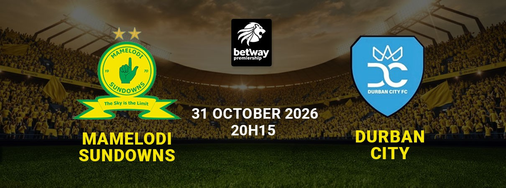
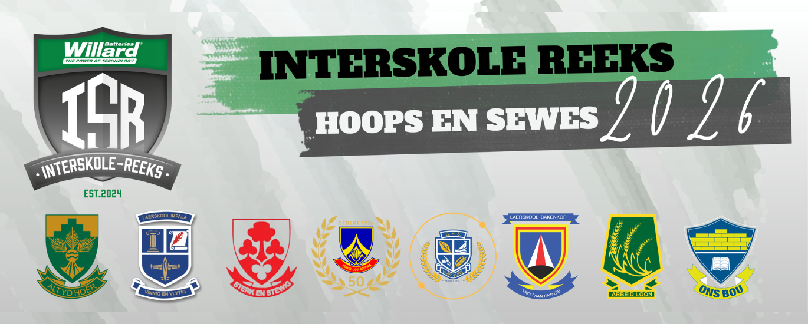
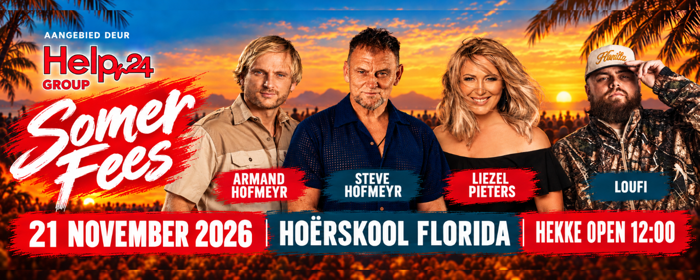

Appel in PE
Boardwalk Hotel and Casino6 Nov 2026, 21:00
Klub 600
1 Jan 2026, 08:00
Orlando Amstel Arena
2 Aug 2026, 08:00
Chatsworth Stadium
28 Oct 2026, 19:00

Hoërskool Hartebeespoor
31 Oct 2026, 07:00
Hoërskool Kempton Park
31 Oct 2026, 12:00
Royal Bafokeng Stadium
31 Oct 2026, 20:15
Boardwalk Hotel and Casino
6 Nov 2026, 21:00
Tarlton International Raceway
7 Nov 2026, 13:00
Twin Trees
7 Nov 2026, 17:00
Markötter Long Room
13 Nov 2026, 12:00

Hoërskool Florida
21 Nov 2026, 12:00
Try an event name or venue, or clear the search to see all events.